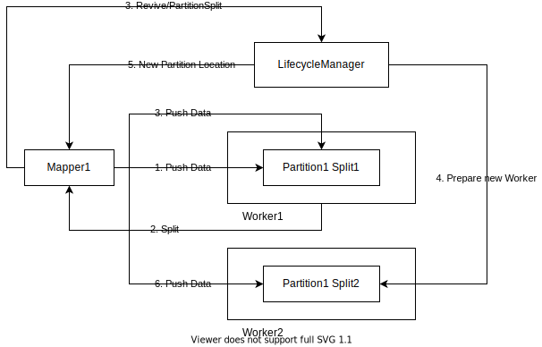

ShuffleClient
Overview
ShuffleClient is responsible for pushing and reading shuffle data. It's a singleton in each leaf process, i.e. Executor in Apache Spark, or TaskManager in Apache Flink. This article describes the detailed design for push data and read data.
Push Data
API specification
The push data API is as follows:
public abstract int pushData(
int shuffleId,
int mapId,
int attemptId,
int partitionId,
byte[] data,
int offset,
int length,
int numMappers,
int numPartitions)
shuffleIdis the unique shuffle id of the applicationmapIdis the map id of the shuffleattemptIdis the attempt id of the map task, i.e. speculative task or task rerun for Apache SparkpartitionIdis the partition id the data belongs todata,offset,lengthspecifies the bytes to be pushednumMappersis the number map tasks in the shufflenumPartitionsis the number of partitions in the shuffle
Lazy Shuffle Register
The first time pushData is called, Client will check whether the shuffle id has been registered. If not,
it sends RegisterShuffle to LifecycleManager, LifecycleManager then sends RequestSlots to Master.
RequestSlots specifies how many PartitionLocations this shuffle requires, each PartitionLocation logically
responds to data of some partition id.
Upon receiving RequestSlots, Master allocates slots for the shuffle among Workers. If replication is turned on,
Master allocates a pair of Workers for each PartitionLocation to store two replicas for each PartitionLocation.
The detailed allocation strategy can be found in Slots Allocation. Master then
responds to LifecycleManager with the allocated PartitionLocations.
LifcycleManager caches the PartitionLocations for the shuffle and responds to each RegisterShuffle RPCs from
ShuffleClients.
Normal Push
In normal cases, the process of pushing data is as follows:
ShuffleClientcompresses data, currently supportszstdandlz4ShuffleClientadds Header for the data:mapId,attemptId,batchIdandsize. ThebastchIdis a unique id for the data batch inside the (mapId,attemptId), for the purpose of de-duplicationShuffleClientsendsPushDatato theWorkeron which the currentPartitionLocationis allocated, and holds push state for this pushingWorkerreceives the data, do replication if needed, then responds success ACK toShuffleClient. For more details about how data is replicated and stored inWorkers, please refer to Worker- Upon receiving success ACK from
Worker,ShuffleClientconsiders success for this pushing and modifies the push state
Push or Merge?
If the size of data to be pushed is small, say hundreds of bytes, it will be very inefficient to send to the wire.
So ShuffleClient offers another API: mergeData to batch data locally before sending to Worker.
mergeData merges data with the same target into DataBatches. Same target means the destination for both the
primary and replica are the same. When the size of a DataBatches exceeds a threshold (defaults to64KiB),
ShuffleClient triggers pushing and sends PushMergedData to the destination.
Upon receiving PushMergedData, Worker unpacks it into data segments each for a specific PartitionLocation, then
stores them accordingly.
Async Push
Celeborn's ShuffleClient does not block compute engine's execution by asynchronous pushing, implemented in
DataPusher.
Whenever compute engine decides to push data, it calls DataPusher#addTask, DataPusher creates a PushTask which
contains the data, and added the PushTask in a non-blocking queue. DataPusher continuously poll the queue
and invokes ShuffleClient#pushData to do actual push.
Split
As mentioned before, Celeborn will split a PartitionLocation when any of the following conditions happens:
PartitionLocationfile exceeds threshold (defaults to 1GiB)- Usable space of local disk is less than threshold (defaults to 5GiB)
Workeris inGraceful Shutdownstate- Push data fails
For the first three cases, Worker informs ShuffleClient that it should trigger split; for the last case,
ShuffleClient triggers split itself.
There are two kinds of Split:
HARD_SPLIT, meaning oldPartitionLocationepoch refuses to accept any data, and future data of thePartitionLocationwill only be pushed after newPartitionLocationepoch is readySOFT_SPLIT, meaning oldPartitionLocationepoch continues to accept data, when new epoch is ready,ShuffleClientswitches to the new location transparently
The process of SOFT_SPLIT is as follows:

LifecycleManager keeps the split information and tells reducer to read from all splits of the PartitionLocation
to guarantee no data is lost.
Read Data
API specification
ShuffleClient provides an API that creates an InputStream to read data from a partition id. Users can also set
startMapIndex and endMapIndex to read data within the map range.
public abstract CelebornInputStream readPartition(
int shuffleId,
int appShuffleId,
int partitionId,
int attemptNumber,
int startMapIndex,
int endMapIndex,
ExceptionMaker exceptionMaker,
MetricsCallback metricsCallback)
shuffleIdis the unique shuffle id of CelebornappShuffleIdis the unique shuffle id of the applicationpartitionIdis the partition id to read fromattemptNumberis the attempt id of reduce task, can be safely set to any valuestartMapIndexis the index of start map index of interested map range, set to 0 if you want to read all partition dataendMapIndexis the index of end map index of interested map range, set toInteger.MAX_VALUEif you want to read all partition dataexceptionMakeris the marker of exception including fetch failure exception.metricsCallbackis the callback of monitoring metrics to increase read bytes and time etc.
The returned input stream is guaranteed to be Exactly Once, meaning no data lost and no duplicated reading, or else
an exception will be thrown, see Here.
Get PartitionLocations
To read data from a partition id, ShuffleClient first checks whether the mapping from partition id to all
PartitionLocations are locally cached, if not, ShuffleClient sends GetReducerFileGroup to LifecycleManager
for the mapping, see Here.
Read from PartitionLocation
ShuffleClient creates a PartitionReader for each PartitinLocation.
As described Here, PartitionLocation data can be stored in
different medium, i.e. memory, local disk, distributed filesystem. For the former two, it creates
a WorkerPartitionReader to read from Worker, for the last one, it creates a DfsPartitionReader to read
directly from the distributed filesystem.
As described Here, the file is chunked. WorkerPartitionReader asynchronously
requests multiple chunks from Worker, and reduce task consumes the data whenever available.
If exception occurs when fetching a chunk, ShuffleClient will restart reading from the beginning of another
(if replication is turned on, else retry the same) PartitionLocation. The reason to restart reading the whole
PartitionLocation instead of the chunk is because chunks with the same index in primary and replica are not
guaranteed to contain the same data, as explained Here.
ShuffleClient chained the PartitionReaders and wrap them in an InputStream. To avoid duplicated read,
CelebornInputStream discards data from un-successful attempts, and records batch ids it has seen within an attempt.
Read from Map Range
If user specifies startMapIndex and endMapIndex, CelebornInputStream will only return data within the range.
Under the hood is that Worker only responds data within the range. This is achieved by sorting and indexing the file
by map id upon receiving such range read request, then return the continuous data range of interest.
Notice that the sort on read is only triggered upon map range read, not for the common cases where whole partition data is requested.
Celeborn also optionally records map ids for each PartitionLocation, in the case of map range reading,
CelebornInputStream will filter out PartitionLocations that are out of the specified range.